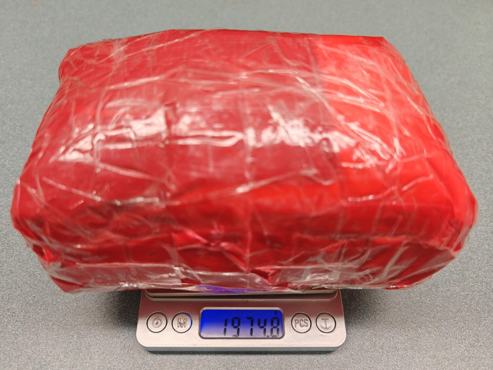

Dynamic robotic catching of free-flying objects is challenging due to the need for precise timing, coordination, and safe impact mitigation, particularly when handling heavy objects. In this work, we investigate reinforcement learning–based dynamic object catching using a kinematically redundant parallel manipulator and explicitly address impact reduction at contact. We propose Parallel Performance-Adaptive Curricula (PPAC), a curriculum learning framework that adapts task difficulty along two complementary axes: end-effector initialization and post-contact interaction duration. This parallel curriculum structure enables stable training under sparse rewards while jointly optimizing two task objectives. To evaluate contact safety in a learning-based setting, we introduce an impact reduction indicator that measures relative-velocity reduction at contact and is invariant to object properties. Using PPO with an asymmetric actor–critic architecture, we train a policy to catch a free falling object of substantial size and mass (18 × 12 × 12 cm, 2.0 kg). In simulation, the proposed method achieves a 70% catching success rate and a 45% average impact reduction. The learned policy transfers successfully to a real Gosselin Platform without additional tuning.
The video shows a testing case with a success rate of 0.65, and median impact reduction indicator of 0.5. The end effector can be observed matching object falling direction and velocity to reduce the relative velocity upon contact. Jittering, penetration, and other simulation defects can be visually identified as a consequence of closed-chain kinematics for a complex system. We discard the current episode in training if errors happen.
The video shows a testing case with a success rate of 0.42, and median impact reduction indicator of 0.0.
The robot end effector demonstrates successful catching under varying initial object orientations, falling directions, and velocities.
The object is a pile of mini beanbags wrapped in red fabric and transparent packaging tape. It weighs 2.0 kg. The dimensions of the object are approximately 18 cm × 12 cm × 12 cm, matching the size of the object in the simulation.

@article{Chen,
author = {},
title = {},
journal = {},
year = {2026},
}